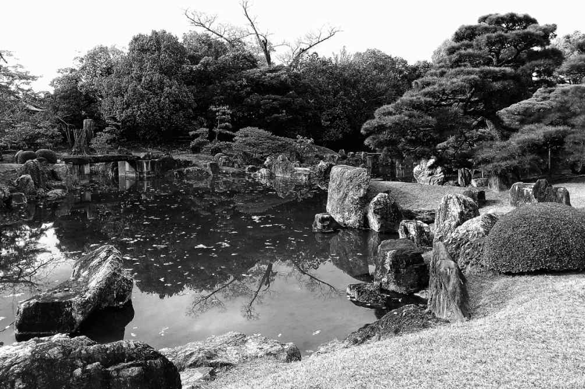

645年大化改新所引进的中国的帝国体制，在一个很长的时期内有效地起作用。不过，到12世纪时，这种体制已被日本的种种封建制度所破坏和取代。一个原因是，各省统治者太喜欢京都的各种娱乐活动，往往将他们的权力和职责授予地方部属。另一个原因是，有势力的地方家族和佛教团体对土地总是垂涎欲滴，经常用武力强占土地。只要免税制度继续存在，他们就想开垦荒地。这些倾向使纳税土地的数量减少，意味着拥有耕地的农民的捐税负担增加；于是这些农民或是逃亡到北部边境地区，用武力赶走居住在那里的阿伊努人，或是将自己连同土地一起交托给拥有采邑的贵族。这样，他们可以免税，并得到保护，却因此变成农奴。结果，到12世纪末，纳税土地只占整个耕地面积的百分之十，甚至更少，地方权力被新的农村贵族所接管。
与此同时，由于帝国军队的瓦解，农村贵族成为居统治地位的军事力量。大化改新规定所有20岁到60岁的男人服兵役。但是，这些应征士兵必须自带武器和粮食，而且还不免除固定的捐税负担。这种做法是行不通的，于739年被废除。国家军事职务通常由软弱的宫廷贵族担任。结果，反对阿伊努人的战争由农村贵族进行。他们已成为骑兵武士，其军事战斗力逐渐增强，最后完全超过了帝国军队。这时，在这些农村贵族和他们的侍从即武士（字面上的意思是“为人服务的人”）之间形成了一种封建关系。这种关系以理想化的道德即“武士道”为基础。武士在法律和礼仪上享有特权，但反过来必须绝对效忠于他们的封建领主。

图98 图为京都众多美丽的园林之一。京都是足利将军的都城所在。
到12世纪，日本已由互相竞争的各封建领主集团控制，这些封建领主为控制尽可能多的土地而你争我夺。结果，大地主即“大名”兴起。16世纪初，这样的大名有几百个，他们都企图获得统治全日本的霸权。